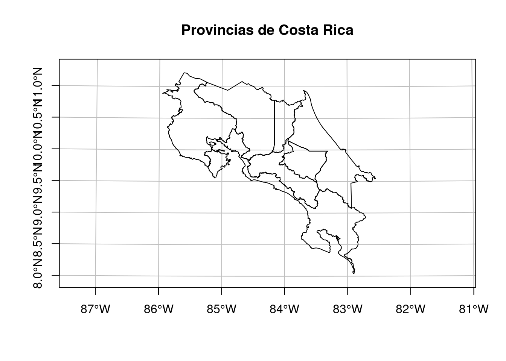
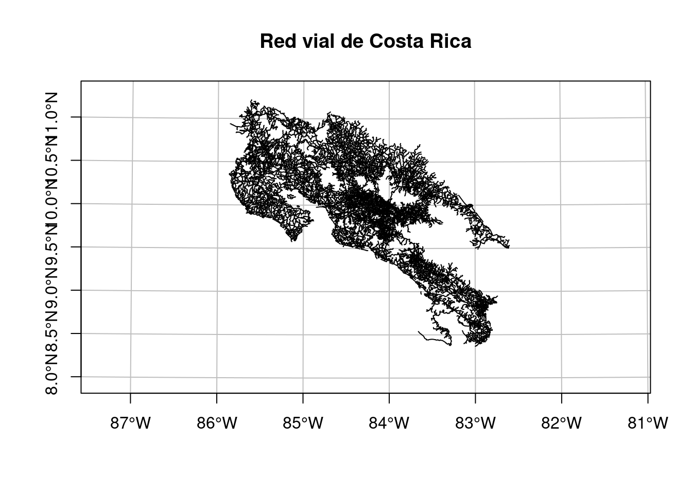
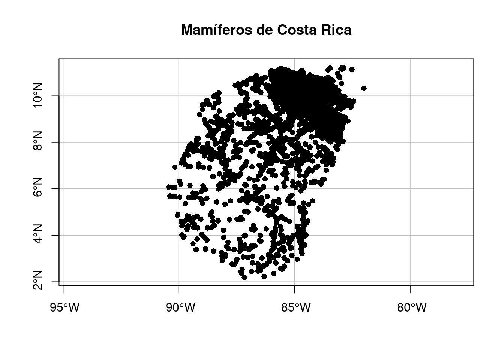

# Carga de paquetes
library(tidyverse)
library(plotly)
library(DT)
library(sf)
library(leaflet)
library(leaflet.extras)
library(leafem)15 Tableros de control
15.1 Resumen
15.2 Trabajo previo
15.2.1 Lecturas
Quarto - Quarto Dashboards. (s.f.). https://quarto.org/docs/dashboards/
15.2.2 Carga de paquetes
15.2.3 Carga de datos para ejemplos
15.2.3.1 Provincias de Costa Rica
Es un archivo GeoJSON con los polígonos de las provincias de Costa Rica. Este archivo proviene de un geoservicio de tipo Web Feature Service (WFS) publicado por el Instituto Geográfico Nacional (IGN).
# Lectura y visualización de datos geoespaciales de provincias
# Lectura
provincias <-
st_read(
dsn = "datos/ign/delimitacion-territorial-administrativa/provincias.geojson",
quiet = TRUE
)
# Visualización en un mapa
plot(
provincias$geometry,
extent = st_bbox(c(xmin = 280000, xmax = 660000, ymin = 880000, ymax= 1250000)),
main = "Provincias de Costa Rica",
axes = TRUE,
graticule = TRUE
)
15.2.3.2 Red vial de Costa Rica
Es un archivo GeoJSON con las líneas de la red vial de Costa Rica. Este archivo proviene de un geoservicio de tipo Web Feature Service (WFS) publicado por el Instituto Geográfico Nacional (IGN).
# Lectura y visualización de datos geoespaciales de la red vial
# Lectura
red_vial <-
st_read(
dsn = "datos/ign/infraestructura/redvial.geojson",
quiet = TRUE
)
# Visualización en un mapa
plot(
red_vial$geometry,
extent = st_bbox(c(xmin = 280000, xmax = 660000, ymin = 880000, ymax= 1250000)),
main = "Red vial de Costa Rica",
axes = TRUE,
graticule = TRUE
)
15.2.3.3 Mamíferos de Costa Rica
Es un archivo CSV con registros de presencia de la clase Mammalia (mamíferos) de Costa Rica. Este archivo proviene de una consulta al portal de datos de la Infraestructura Mundial de Información en Biodiversidad (GBIF).
# Lectura y visualización de datos geoespaciales de mamíferos
# Lectura
mamiferos <-
st_read(
"datos/gbif/mamiferos.csv",
options = c(
"X_POSSIBLE_NAMES=decimalLongitude", # columna de longitud decimal
"Y_POSSIBLE_NAMES=decimalLatitude" # columna de latitud decimal
),
quiet = TRUE
)
# Asignación del CRS WGS84
st_crs(mamiferos) <- 4326
# Visualización en un mapa
plot(
mamiferos$geometry,
pch = 16,
main = "Mamíferos de Costa Rica",
axes = TRUE,
graticule = TRUE
)
15.3 Introducción
Un tablero de control, también llamado cuadro de mando o dashboard, es un tipo de interfaz gráfica de usuario que reúne visualizaciones de datos e información resumida relevantes para una temática, objetivo o proceso particular. Estas visualizaciones se presentan principalmente en formato de tablas, gráficos estadísticos y mapas (ej. Tablero de control de la Universidad Johns Hopkins sobre la epidemia de Covid-19). El término dashboard proviene del tablero de instrumentos de un automóvil, el cual le permite al conductor monitorear rápidamente las funciones principales del vehículo.
Los tableros de control son usualmente accesibles mediante un navegador web y pueden estar vinculados a fuentes de datos que se actualizan regularmente. Se caracterizan por ser interactivos y facilitar la exploración de datos a los usuarios.
Quarto facilita el desarrollo de tableros de control a través de Quarto Dashboards](https://quarto.org/docs/dashboards/.
15.4 Quarto Dashboards
Quarto Dashboards es una capacidad de Quarto (introducida en la versión 1.4) que permite crear tableros de control mediante los lenguajes de programación R, Python, Julia y Observable. Estos tableros de control pueden incluir componentes desarrollados en DT, Ggplot2, Plotly y Leaflet, entre otros paquetes de R. Pueden publicarse como páginas estáticas (ej. en GitHub Pages) o en un servidor Shiny para proporcionar mayor interactividad al usuario.
La Figura 15.1 muestra un tablero de control desarrollado con Quarto Dashboards.
{kind=link}
15.4.1 Componentes
Un tablero de control desarrollado con Quarto Dashboards tiene los siguientes componentes:
Barra de navegación: incluye el título, íconos y autor junto con enlaces a páginas (si se definen más de una página).
Páginas, filas, columnas y pestañas (tabs): Las páginas, filas y columnas se definen utilizando encabezados de Markdown (con atributos opcionales para controlar la altura, el ancho y otras propiedades). Las pestañas pueden usarse para dividir aún más el contenido de una fila o columna.
Tarjetas, barras laterales y barras de herramientas: Las tarjetas son contenedores para visualizaciones de datos como tablas, gráficos estadísticos, mapas y otras. Las barras laterales y barras de herramientas se utilizan para el ingreso de datos en tableros de control interactivos.
15.4.2 Configuración
Los tableros de control son arreglos de componentes que se utilizan para proporcionar navegación y presentar datos. A continuación, se describen los elementos que se utilizan para estructurar la navegación y el diseño de los tableros de control.
15.4.2.2 Organización
Dentro de una página, los componentes del tablero de control se organizan mediante conjuntos alternos de filas y columnas. Las filas y columnas, a su vez, se definen mediante encabezados de Markdown y celdas computacionales (bloques de código).
15.4.2.3 Páginas
Para introducir múltiples páginas, se utilizan encabezados de nivel 1 sobre los encabezados de nivel 2, los cuales se usan para definir filas y columnas. El texto de los encabezados de nivel 1 se usa para enlazar a las páginas en la barra de navegación.
15.4.2.4 Pestañas
Las pestañas (tabs) se utilizan para incluir múltiples vistas de datos o contenido de importancia secundaria sin que interfiera con la visualización principal. Las pestañas se crean añadiendo la clase .tabset a una fila o columna.
15.4.2.5 Tarjetas
Las tarjetas son la unidad fundamental de visualización en un tablero de control. Constituyen el contenido de las filas y las columnas.
Para más información sobre la configuración de los tableros de control, se recomienda consultar Dashboard Layout.
15.5 Ejercicios
Organice en un tablero de control las visualizaciones de datos sobre riesgo de atropello de especies de mamíferos alrededor de la ruta 32. Incluya:
- Una tabla DT con las especies en mayor riesgo y la cantidad de registros.
- Un gráfico Plotly que muestre la misma información que el punto a.
- Un mapa Leaflet que muestre la zona de riesgo y los registros de presencia.
Agregue tablas, gráficos y mapas adicionales que considere de impoortancia.
Publique el tablero de control como un sitio en GitHub Pages.
15.6 Recursos adicionales
Quarto Dashboards | Charles Teague | Posit
Ejemplos de tableros de control desarrollados con Quarto Dashboards